Descubre información detallada sobre los Pokémon de la primera generación.
Pikachu
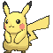
Pikachu es un Pokémon de tipo eléctrico, conocido por su habilidad para generar electricidad y su popularidad como la mascota de la franquicia Pokémon. Un dato interesante es que almacena electricidad en las mejillas y la libera para atacar.
Charizard
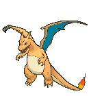
Charizard es un Pokémon de tipo fuego/volador, aunque parece un dragón, no es de tipo Dragón. Es conocido por ser el compañero de Rojo en Pokemon Rojo Fuego. Tiene dos Megaevoluciones (X e Y), y la X sí es de tipo Fuego/Dragón.
Gengar
Gengar es un Pokémon de tipo fantasma, conocido por su apariencia aterradora y sus habilidades mágicas. Tiene una Megaevolución y una forma Gigamax.
Eevee
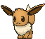
Eevee es un Pokémon de tipo normal, famoso por su capacidad de evolucionar en múltiples formas, conocidas como "Evoluciones de Eevee". Cada evolución tiene un tipo diferente, lo que lo hace muy versátil y popular entre los entrenadores.
Vaporeon
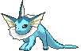
Vaporeon es un Pokémon de tipo agua, una de las evoluciones de Eevee. Es conocido por su capacidad para adaptarse al agua y su apariencia similar a un pez. Vaporeon puede desaparecer en el agua, lo que lo hace un oponente difícil de detectar en combate.
Jolteon
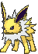
Jolteon es un Pokémon de tipo eléctrico, una de las evoluciones de Eevee. Es conocido por su velocidad y su capacidad para generar electricidad. Jolteon puede lanzar rayos que paralizan a sus oponentes.
Flareon
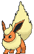
Flareon es un Pokémon de tipo fuego, una de las evoluciones de Eevee. Es conocido por su capacidad para generar calor y su pelaje inflamable. Flareon puede lanzar llamas intensas que pueden derretir casi cualquier cosa.
Snorlax
Snorlax es un Pokémon de tipo normal, conocido por su gran tamaño y su apetito insaciable. Es famoso por bloquear caminos en los juegos de Pokémon, y los entrenadores deben despertarlo para poder continuar su aventura.
Magikarp
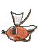
Magikarp es un Pokémon de tipo agua, es famoso por ser uno de los Pokémon más débiles: su ataque Salpicadura no hace nada. Aunque inicialmente débil, puede convertirse en un poderoso Gyarados.
Gyarados
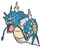
Gyarados es un Pokémon de tipo agua volador, conocido por su agresividad y su capacidad para vivir en ambos entornos. Es el evolución de Magikarp. Tiene Megaevolución, y esa forma pasa a ser de tipo Agua/Siniestro.
Dragonite
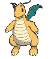
Dragonite es un Pokémon de tipo dragón volador, es muy poderoso, y por eso se le considera un “pseudolegendario”. A pesar de su tamaño y de su aspecto, la Pokédex lo describe como amable y capaz de rescatar a náufragos.
Legendary Birds
Articuno
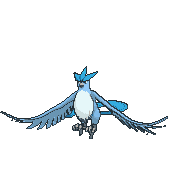
Articuno es un Pokémon de tipo hielo volador, conocido por su capacidad para controlar el frío y su apariencia majestuosa. Según la Pokédex, aparece ante los viajeros perdidos en montañas nevadas.
Zapdos
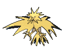
Zapdos es un Pokémon de tipo eléctrico volador, conocido por su capacidad para generar tormentas eléctricas y su velocidad. Vive entre las nubes de tormenta y se dice que se hace más fuerte con los rayos.
Moltres
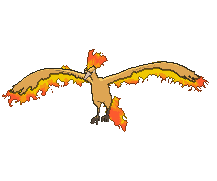
Moltres es un Pokémon de tipo fuego volador, conocido por su capacidad para controlar el fuego y su apariencia imponente. La leyenda dice que, cuando está herido, se sumerge en magma de volcán para curarse. Es considerado un símbolo de poder y fuerza en la región de Kanto.
Mewtwo
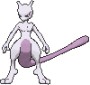
Mewtwo es un Pokémon de tipo psíquico, conocido por su increíble poder mental y su apariencia distintiva. Es uno de los Pokémon más fuertes y temidos en la región de Kanto. Fue creado mediante técnicas de clonación y es considerado uno de los Pokémon más peligrosos.
Mew
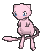
Mew es un Pokémon de tipo psíquico, conocido por su rareza y su habilidad para aprender cualquier movimiento. Es considerado el ancestral de todos los Pokémon y es muy difícil de encontrar en la naturaleza. Se dice que contiene los genes de todos los Pokémon.